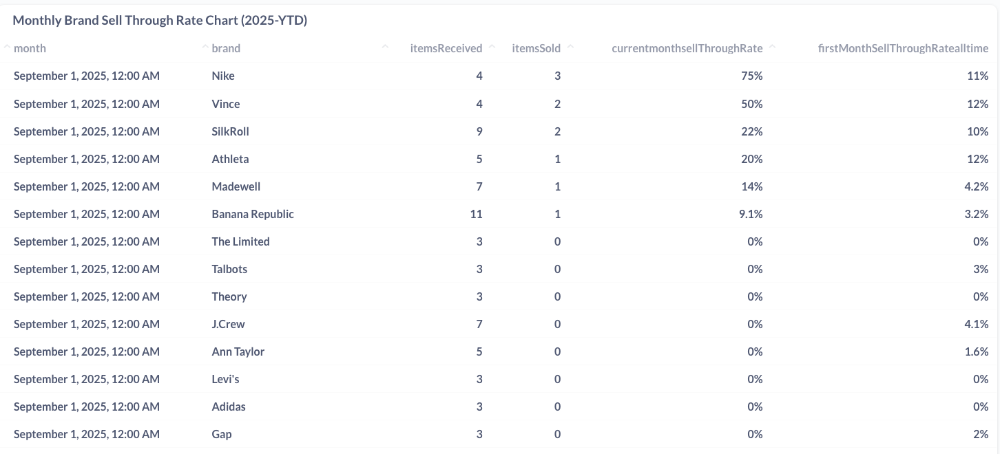
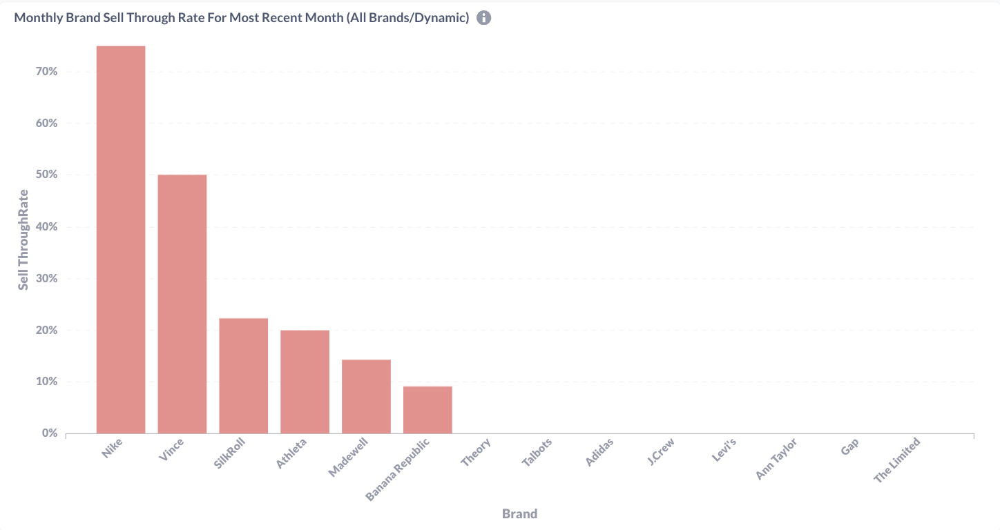
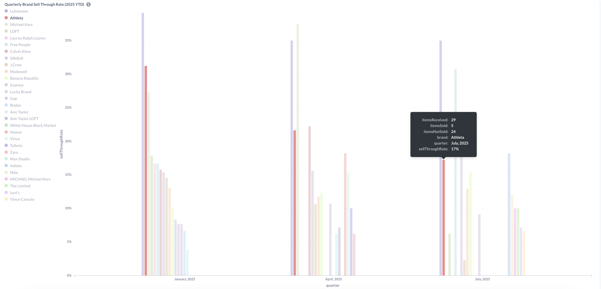
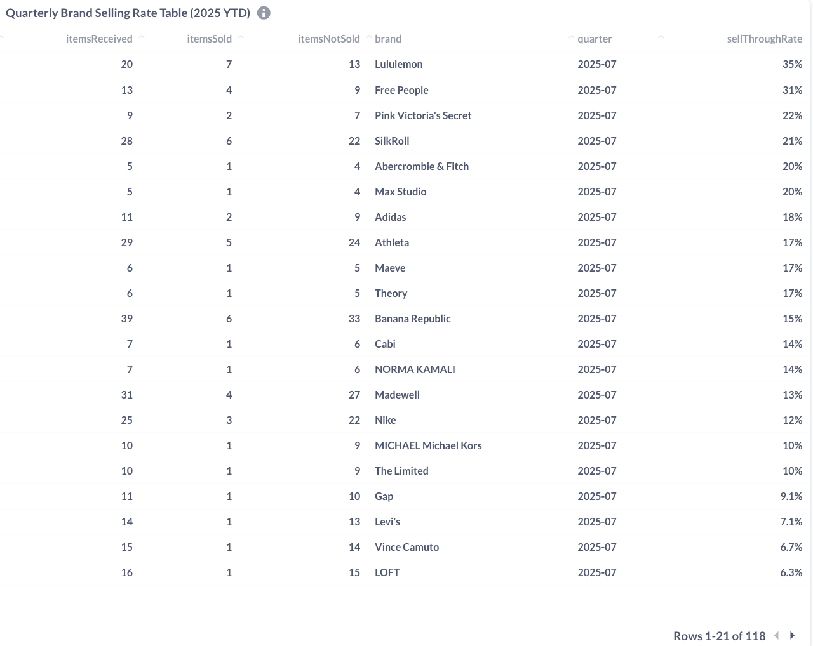
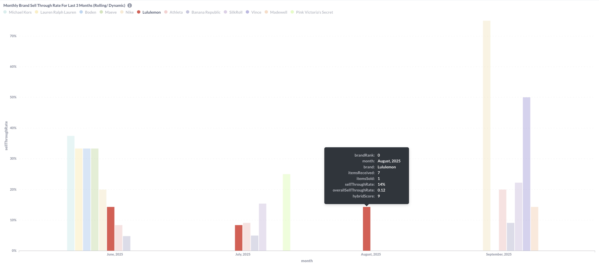
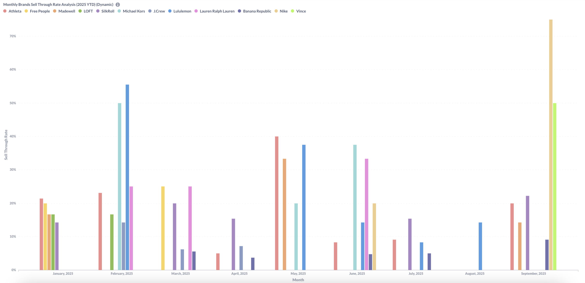
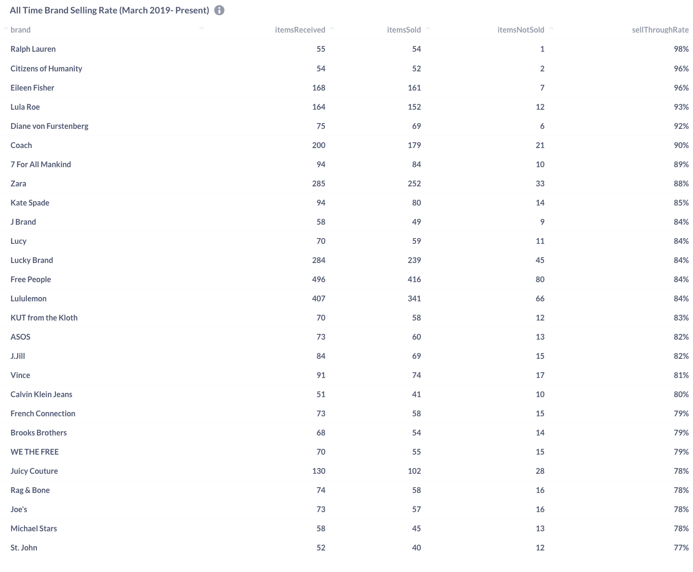

Brand Performance Analytics Dashboard
Retail Analytics Internship - Brand Sell-Through Rate Analysis
Developed comprehensive brand performance tracking system using Metabase to optimize inventory management and identify top-performing brands across multiple time periods.
Project Overview
Business Problem
The retail business needed to understand which brands were selling through inventory effectively and identify patterns in brand performance to optimize buying decisions and inventory allocation.
My Role & Tools
- Built automated dashboards in Metabase
- Wrote SQL queries to calculate sell-through rates
- Created dynamic visualizations for different time periods
- Tools: Metabase, SQL, PostgreSQL
Key Metrics & Analysis
Dashboard 1: Monthly Brand Sell-Through Rate


This dashboard tracks monthly brand performance, showing both current month sell-through rates and historical trends. The data reveals that Nike achieved the highest sell-through rate at 75% in September 2025, while many premium brands like Levi’s, Adidas, and Gap showed 0% sell-through, indicating potential overstock or seasonal demand issues.
Monthly Brand Performance Insights:
- Nike dominance: 75% sell-through rate established Nike as top performer in September 2025
- Athleta strong secondary: 20% sell-through rate positioned Athleta as second-highest performing brand
- Inventory challenges: Multiple brands with 0% sell-through indicating potential overstock or demand misalignment
- Performance gap: Significant disparity between top performers and zero-conversion brands suggests need for selective inventory curation
Dashboard 2: Quarterly Brand Performance


Quarterly analysis reveals seasonal trends, with Lululemon showing consistently strong performance (~35% sell-through) across quarters, while athletic brands like Athleta showed more volatility between quarters.
Quarterly Brand Performance Insights:
- Consistent performers: Lululemon maintained strong quarterly results throughout 2025
- Seasonal variation: Clear differences in brand performance across Q1, Q2, and Q3
- Athletic brand dominance: Athletic brands consistently lead top-performing categories
- Athleta volatility: Despite strong 17% sell-through in July 2025, Athleta shows quarterly fluctuation with several percentage point variations from peak performance
Dashboard 3: Rolling 3-Month Brand Trends

The rolling 3-month view provides a different perspective from the quarterly analysis above - this tracks monthly sell-through rates for inventory received and sold within the same month, while the quarterly dashboard shows sell-through rates for inventory received and sold within a 3-month period. This monthly view helps identify immediate sales velocity vs. sustained quarterly performance.
Key Insight: Lululemon consistently achieves strong same-month sell-through rates (~10% in June, July, and August 2025), demonstrating immediate sales velocity. However, Lululemon shows a decline in September 2025, with no sales, suggesting potential inventory, demand challenges or shifting market trends. Other brands show inconsistent patterns, such as Michael Kors achieving a strong 40% sell-through rate in June (visible as the first bar) but disappearing from subsequent months, indicating sporadic inventory cycles or seasonal demand fluctuations.
Technical Features: - Interactive tooltips with detailed brand metrics including hybrid scores - Same-month sell-through tracking vs. quarterly cumulative rates - Hybrid scoring system combining multiple performance indicators - Monthly trend analysis for immediate sales velocity assessment
Data Highlights: - Michael Kors: ~40% same-month sell-through (3-month leader) - Lululemon: 35% quarterly sell-through performance
Dashboard 4: Historical Brand Performance


Historical vs. Recent Performance Analysis
Long-term brand performance analysis from March 2019 to present reveals premium brands dominate lifetime sell-through rates, with Ralph Lauren (98%) and Citizens of Humanity (96%) leading the market. However, comparing this historical data with recent monthly performance (2025 YTD) shows significant shifts in brand dynamics and market positioning.
All-Time Performance Leaders (March 2019-Present): - Ralph Lauren: 98% lifetime sell-through (55 received, 54 sold) - Citizens of Humanity: 96% performance (54 received, 52 sold) - Eileen Fisher: 96% with higher volume (168 received, 161 sold) - Lululemon: 84% lifetime rate (407 received, 341 sold) - notable for high volume
Recent Monthly Trends vs. Historical Performance: - Vince emerges as a standout in September 2025 (50% monthly rate) despite moderate 81% lifetime performance, suggesting recent strategic improvements - Lululemon shows disconnect between strong lifetime performance (84%) and recent monthly volatility, including zero sales in September 2025 - Premium brands like Ralph Lauren and Citizens of Humanity rarely appear in recent monthly data.
Key Strategic Insights: - Volume vs. Efficiency Trade-off: High-volume brands (Lululemon: 407 items, Free People: 496 items) maintain solid but not exceptional lifetime rates (84%), while low-volume premium brands achieve near-perfect sell-through - Market Evolution: Recent monthly leaders (Vince, Michael Kors) don’t align with lifetime top performers, suggesting changing consumer preferences or improved brand strategies - Inventory Management: Premium brands’ limited recent activity may indicate more strategic, seasonal inventory planning compared to fast-fashion continuous restocking
Key Business Insights
Performance Patterns Identified:
- Athletic/wellness brands (Nike, Athleta, Lululemon) consistently outperform traditional fashion brands
- Seasonal trends - certain brands perform significantly better in specific quarters
- Premium brands demonstrate higher historical sell-through rates but with lower volume
- Zero sell-through rates for multiple brands in recent months indicated critical inventory management issues
Business Impact & Recommendations:
- Inventory Optimization: Recommended increasing allocation for consistently high-performing brands (Nike, Lululemon)
- Promotional Strategy: Suggested targeted promotions for brands with low sell-through rates
- Pricing Analysis: Identified opportunity to analyze pricing strategy for zero sell-through brands
- Seasonal Planning: Provided data-driven insights for quarterly buying decisions
Technical Implementation
Dashboard Features:
- Real-time data refresh from retail database
- Interactive filtering by time period, brand, and performance metrics
- Drill-down capabilities from quarterly to monthly to daily views
- Custom KPI calculations including hybrid performance scores
Data Engineering Challenge
- Data Sources: Products collection and Orders collection in MongoDB
- Key Challenge: Matching product SKUs received in a time period with orders sold in the same period
- Solution: Built complex MongoDB aggregation pipeline with $lookup to join inventory and sales data
- Custom Logic: Created quarter calculation using $dateFromParts for flexible time period analysis
- Data Quality: Applied minimum threshold filters (5+ items) to ensure statistical significance